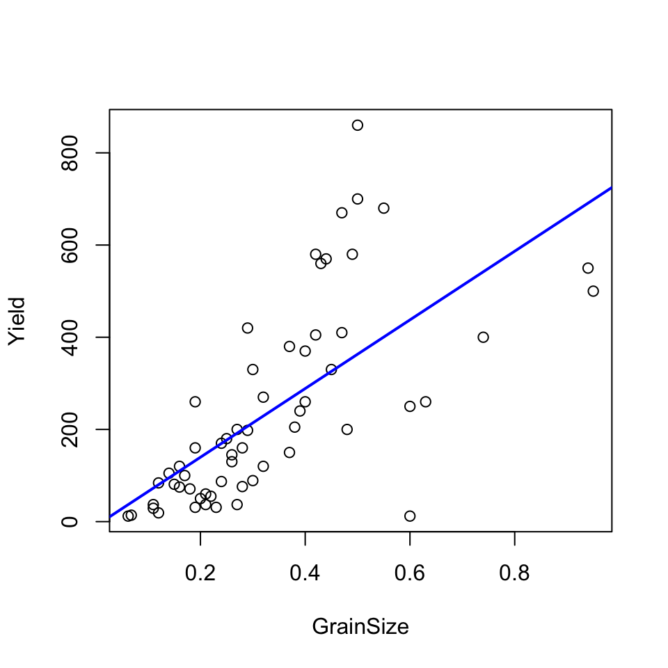

riverValley = read.csv("./data/ArkansasRiverValley.csv")plot(Yield~GrainSize, data=riverValley, xlab="Grain Size", ylab="Yield")## Pearson's r
cor(riverValley$GrainSize, riverValley$Yield, method="pearson")## [1] 0.667871## Spearman's rho
cor(riverValley$GrainSize, riverValley$Yield, method="spearman")## [1] 0.7634203cor.test(riverValley$GrainSize, riverValley$Yield, method="pearson")##
## Pearson's product-moment correlation
##
## data: riverValley$GrainSize and riverValley$Yield
## t = 6.7748, df = 57, p-value = 7.543e-09
## alternative hypothesis: true correlation is not equal to 0
## 95 percent confidence interval:
## 0.4967473 0.7890091
## sample estimates:
## cor
## 0.667871cor.test(riverValley$GrainSize, riverValley$Yield, method="spearman")##
## Spearman's rank correlation rho
##
## data: riverValley$GrainSize and riverValley$Yield
## S = 8095.8, p-value = 2.059e-12
## alternative hypothesis: true rho is not equal to 0
## sample estimates:
## rho
## 0.7634203library(mada)## Loading required package: ellipse##
## Attaching package: 'ellipse'## The following object is masked from 'package:car':
##
## ellipse## Loading required package: mvmeta## This is mvmeta 0.4.7. For an overview type: help('mvmeta-package').rho = cor.test(riverValley$GrainSize, riverValley$Yield, method="spearman")$estimate
CIrho(rho, dim(riverValley)[1])## rho 2.5 % 97.5 %
## [1,] 0.7634203 0.630624 0.8527845rivervalley.lmfit = lm(Yield~GrainSize, data=riverValley)
plot(Yield~GrainSize, data=riverValley)
abline(rivervalley.lmfit, col="blue", lwd=2)
rivervalley.lmfit##
## Call:
## lm(formula = Yield ~ GrainSize, data = riverValley)
##
## Coefficients:
## (Intercept) GrainSize
## -9.294 744.979summary(rivervalley.lmfit)##
## Call:
## lm(formula = Yield ~ GrainSize, data = riverValley)
##
## Residuals:
## Min 1Q Median 3Q Max
## -425.69 -100.43 -28.70 55.03 496.80
##
## Coefficients:
## Estimate Std. Error t value Pr(>|t|)
## (Intercept) -9.294 42.255 -0.220 0.827
## GrainSize 744.979 109.964 6.775 7.54e-09 ***
## ---
## Signif. codes: 0 '***' 0.001 '**' 0.01 '*' 0.05 '.' 0.1 ' ' 1
##
## Residual standard error: 159.4 on 57 degrees of freedom
## Multiple R-squared: 0.4461, Adjusted R-squared: 0.4363
## F-statistic: 45.9 on 1 and 57 DF, p-value: 7.543e-09res = rivervalley.lmfit$residuals
fitted = rivervalley.lmfit$fitted.values
y = riverValley$Yield
data.frame(Y=y, Fitted_value = fitted, Residuals = res)## Y Fitted_value Residuals
## 1 12 36.89486 -24.8948554
## 2 14 41.36473 -27.3647300
## 3 29 72.65385 -43.6538518
## 4 37 72.65385 -35.6538518
## 5 19 80.10364 -61.1036427
## 6 84 80.10364 3.8963573
## 7 105 95.00322 9.9967755
## 8 81 102.45302 -21.4530154
## 9 75 109.90281 -34.9028063
## 10 120 109.90281 10.0971937
## 11 100 117.35260 -17.3525972
## 12 71 124.80239 -53.8023882
## 13 31 132.25218 -101.2521791
## 14 160 132.25218 27.7478209
## 15 260 132.25218 127.7478209
## 16 50 139.70197 -89.7019700
## 17 37 147.15176 -110.1517609
## 18 60 147.15176 -87.1517609
## 19 55 154.60155 -99.6015518
## 20 31 162.05134 -131.0513427
## 21 87 169.50113 -82.5011336
## 22 170 169.50113 0.4988664
## 23 180 176.95092 3.0490755
## 24 130 184.40072 -54.4007154
## 25 145 184.40072 -39.4007154
## 26 37 191.85051 -154.8505063
## 27 200 191.85051 8.1494937
## 28 76 199.30030 -123.3002972
## 29 160 199.30030 -39.3002972
## 30 198 206.75009 -8.7500881
## 31 89 214.19988 -125.1998790
## 32 420 206.75009 213.2499119
## 33 330 214.19988 115.8001210
## 34 120 229.09946 -109.0994609
## 35 270 229.09946 40.9005391
## 36 150 266.34842 -116.3484154
## 37 380 266.34842 113.6515846
## 38 205 273.79821 -68.7982063
## 39 240 281.24800 -41.2479972
## 40 260 288.69779 -28.6977881
## 41 370 288.69779 81.3022119
## 42 405 303.59737 101.4026301
## 43 580 303.59737 276.4026301
## 44 560 311.04716 248.9528391
## 45 570 318.49695 251.5030482
## 46 330 325.94674 4.0532573
## 47 410 340.84632 69.1536755
## 48 670 340.84632 329.1536755
## 49 200 348.29612 -148.2961154
## 50 580 355.74591 224.2540937
## 51 700 363.19570 336.8043028
## 52 860 363.19570 496.8043028
## 53 680 400.44465 279.5553483
## 54 12 437.69361 -425.6936063
## 55 250 437.69361 -187.6936063
## 56 260 460.04298 -200.0429790
## 57 400 541.99068 -141.9906790
## 58 550 690.98650 -140.9864972
## 59 500 698.43629 -198.4362881